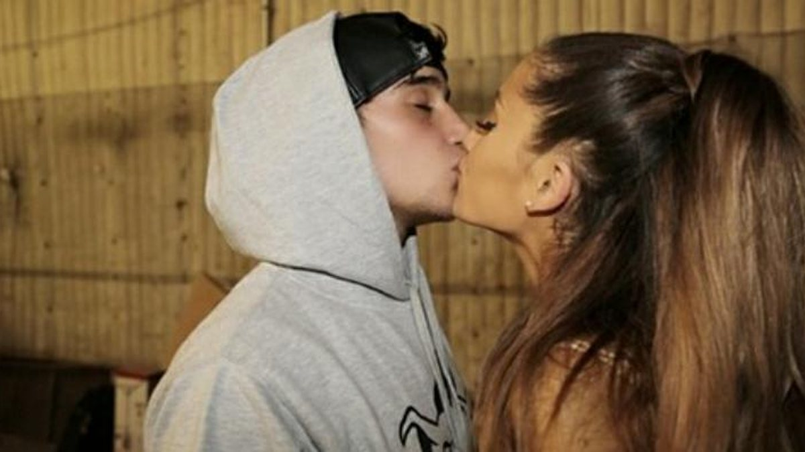
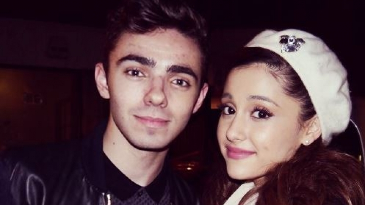
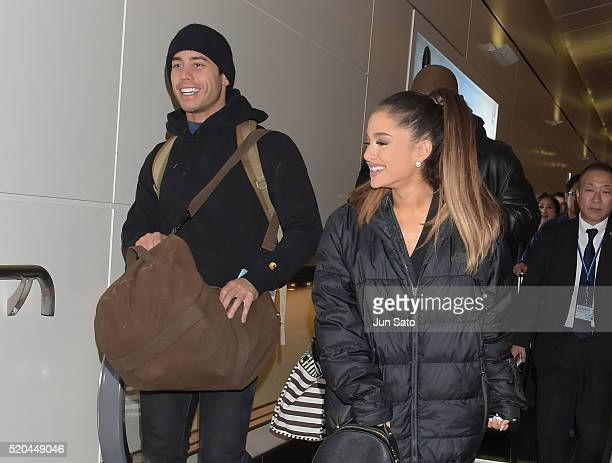
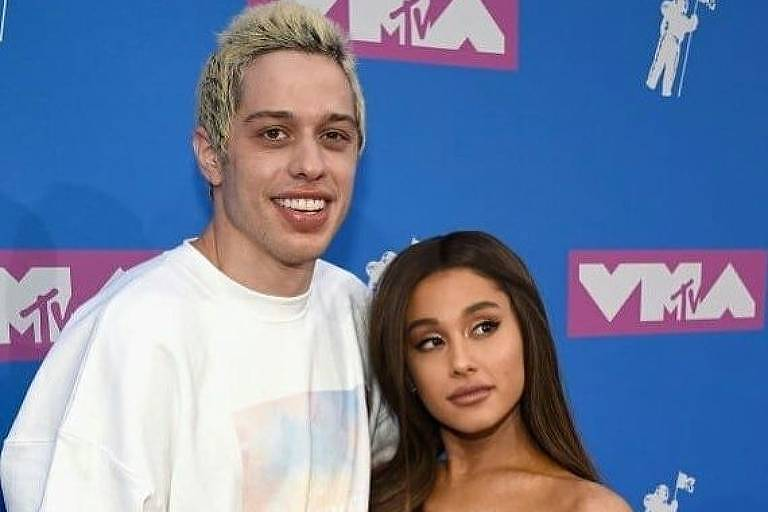
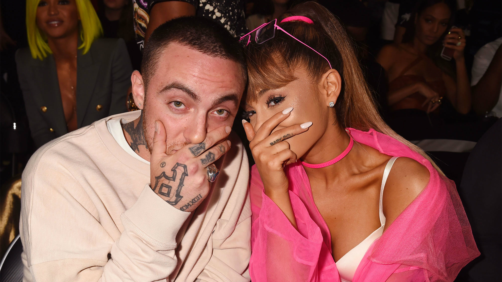
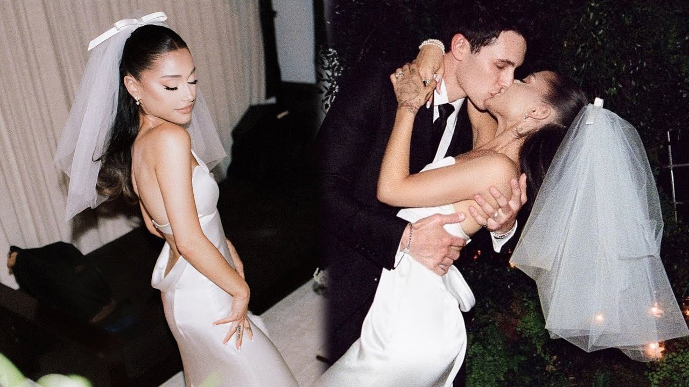

Grande conheceu o ator Graham Phillips, com quem deu seu primeiro beijo, no elenco do musical 13 em 2008, e o namorou até dezembro de 2011. No final de 2011 até meados de 2012, Ariana namorou Jordan Viscomi, que era seu dançarino antes de começarem a se envolver. Após o término dos dois, houve rumores de que Jordan usou Ariana e só estava namorando ela para promover sua própria carreira. Esteve em um relacionamento com Jai Brooks, um membro do grupo australiano de youtubers Janoskians, entre agosto de 2012 e julho de 2013.
Em setembro de 2013, após muita especulação, foi confirmado que Grande estava namorando Nathan Sykes, do grupo The Wanted. Sykes foi o primeiro a dar a notícia aos fãs pelo Twitter e os agradeceu pelo apoio. Em 7 de outubro, Brooks acusou Grande de o trair com Sykes. Logo, a cantora disse que nunca foi infiel com Brooks. Em janeiro de 2014, Grande confirma que ela e Sykes haviam terminado, mas que continuavam amigos. Em 1 de maio, Grande foi fotografada beijando Jai Brooks e foi confirmado que eles haviam voltado. Em 5 de agosto, Grande falou que eles haviam terminado pela segunda vez.
Em 17 de outubro de 2014, após diversos flagras e rumores e em uma entrevista à Telegraph Magazine, Ariana confirma que está namorando com o rapper Big Sean. Em 20 de abril de 2015, a US Weekly confirmou que o par havia se separado, devido a ambos terem horários de turnê conflitantes que os manteriam separados por um ano inteiro. Também foi relatado que o casal havia se separado algumas semanas antes. No mesmo mês, Ariana engatou um relacionamento com Ricky Alvarez, na época seu dançarino na The Honeymoon Tour. Eles namoraram por 1 ano e 3 meses, e se separaram em julho de 2016. Ricky deixou a equipe de dança de Ariana após a separação. As canções de Ariana "Moonlight" e "True Love" são sobre Ricky. Alguns fãs especulam que sua música "Forever Boy" e a história do clipe "Into You" também seja sobre Ricky.
Em 15 de julho de 2016, (alguns dias após seu rompimento com Ricky Alvarez), Grande foi para a Disneyland com o rapper Mac Miller e a cantora Victoria Monét. Em 21 de agosto de 2016, Grande e Miller foram vistos se beijando depois de irem a um restaurante japonês, logo confirmando um relacionamento entre os dois. Ele trabalhou profissionalmente com Ariana várias vezes, mais notavelmente como um artista de destaque em "The Way" e eram amigos íntimos há anos, mas nunca havia tido qualquer indício de romance entre eles até então. Em 10 de maio de 2018, após quase dois anos de namoro, Grande confirmou que ela e Miller haviam terminado, embora ainda permaneçam amigos. A canção de Miller, "Cinderella", é sobre Ariana.
A separação de Grande com Mac Miller foi confirmada em 10 de maio de 2018. Logo em seguida ao seu término com Miller, Grande chegou a classificar o relacionamento dos dois como tóxico. Em meio a questionamentos no Twitter feitos na época, ela afirmou: “Eu não sou uma babá ou uma mãe e nenhuma mulher deve se sentir dessa forma. Eu me preocupei com ele, tentei dar apoio à sobriedade dele e rezei por seu equilíbrio”. Em 13 de maio de 2018. Ariana e o ator e comediante Pete Davidson foram vistos juntos. Uma fonte disse à revista People que logo após a performance de Ariana no Billboard Music Awards 2018, eles estavam juntos nos bastidores e ele tinha o braço em volta dela.[72] Além disso, Grande e Davidson comentaram os posts um do outro no Instagram.[73] Davidson fez quatro tatuagens dedicadas a Grande; uma nuvem, que é uma tatuagem combinando com Grande, suas orelhas de coelho Dangerous Woman, as iniciais de Grande "AG" e "H2GKMO", que é uma tatuagem combinando com Grande e seus amigos.
Em 11 de junho de 2018, várias fontes de notícias informaram que Davidson e Grande estavam noivos, o que Grande confirmou posteriormente. O anel que Davidson deu a Grande custou 93 mil dólares, feito pelo joalheiro Greg Yuna. Ele comprou o anel em maio, o que teria sido apenas algumas semanas depois que os dois começaram a namorar. Davidson e Grande foram à Disneyland para celebrar.[72] Ambos também se mudaram para um apartamento em Manhattan, Nova York, que custou US $16 milhões. Davidson confirmou oficialmente o compromisso com Grande em 20 de junho de 2018, em uma entrevista ao Jimmy Fallon.
Em 7 de setembro de 2018, o rapper Mac Miller foi encontrado morto, fato que abalou extremamente Ariana. Em 16 de setembro de 2018, foi divulgado que Ariana Grande e Pete Davidson adiaram, achando o momento impróprio para a cerimônia. Em 15 de outubro de 2018, Grande e Davidson confirmaram que o fim do noivado, segundo eles, "o relacionamento já não estava dando certo e eles continuam se amando profundamente". Após o rompimento, Grande foi vista novamente com Big Sean. Em 9 de agosto, Frankie Grande, irmão de Ariana, confirmou o relacionamento entre ela e Mikey Foster do duo Social House. Porém em 15 de agosto de 2019, Frankie desmentiu a situação afirmando que os dois são melhores amigos. Em 8 de maio de 2020, com o lançamento de Stuck with U, Ariana apareceu dançando junto com o corretor de móveis Dalton Gomez quem ela conheceu em janeiro de 2020 ao procurar uma casa fora de Los Angeles. A relação foi confirmada no verão de 2020.
Em maio de 2021, Ariana se casou com Dalton em uma íntima cerimônia com a família e amigos de ambos Até 18 de maio de 2021, o casal não havia confirmado o casamento através das redes sociais oficiais.
Ariana postou algumas fotos com seu marido no que seria uma lua de mel romântica em Amsterdã.